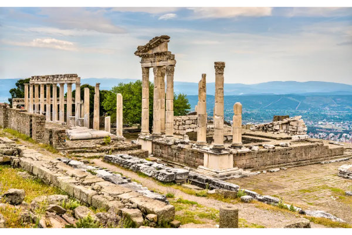
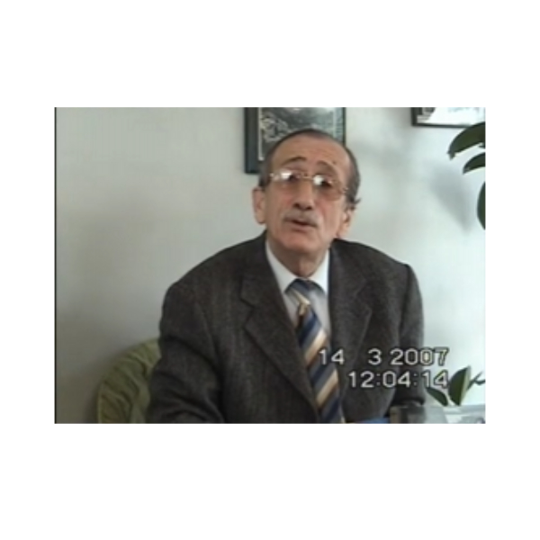
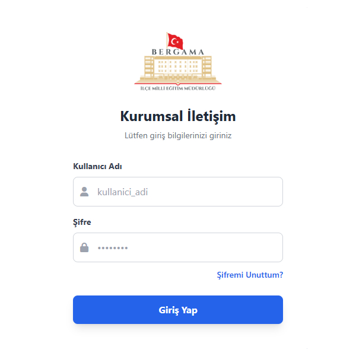
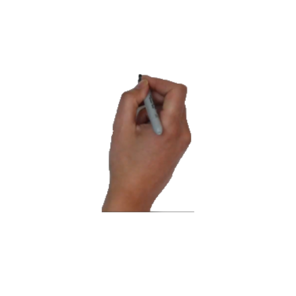
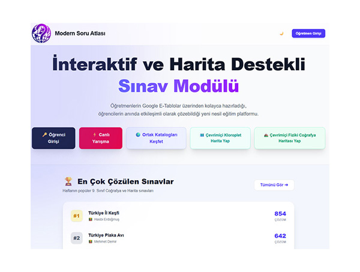

Bergama 2050: İklim Zaman Tüneli
4007 Bilim Şenliği ProjesiPergamon’un İzinde projesi kapsamında, NASA verileri ile hazırlanan interaktif iklim değişikliği görselleştirme çalışması.
Pardus ETAP Çözüm Rehberi
İşletim Sistemi & RehberMilli işletim sistemimiz Pardus'un okullarda yaygınlaştırılması çalışmalarına destek sağlayan teknik rehber.

Tarihe Tanıklık
Video RöportajSon Çanakkale Gazisi Hüseyin KAÇMAZ'ın oğlu ile özel röportaj.

Kurumsal İletişim Sistemi
Web Uygulaması (Node.js)Kurum içi güvenli, kapalı devre mesajlaşma ve dosya paylaşım portalı.

İzmir Kitap Fuarı
Tanıtım & EtkinlikYEĞİTEK standı ve eğitim teknolojileri tanıtım etkinliği.

Unreal Engine
3D SimülasyonBakırçay Havzası'nın gerçekçi 3D arazi modellemesi.

Modern Soru Atlası
Eğitim PlatformuÖğretmenlerin Google E-Tablolar üzerinden kolayca hazırladığı, öğrencilerin anında etkileşimli olarak çözebildiği yeni nesil eğitim platformu.